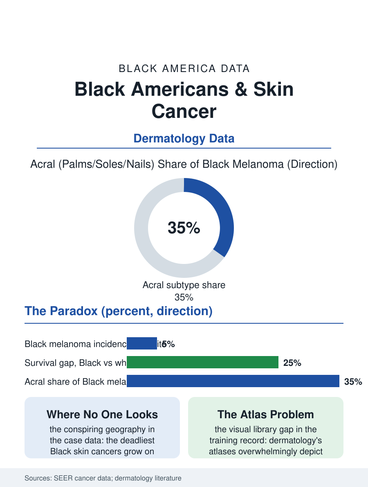

Black Public Health
Where No One Looks: Black Americans and Skin Cancer
Melanoma is rare in Black Americans and deadlier, growing on soles and nail beds where no one looks, in a specialty trained on light skin. The skin file.

Skin cancer is uncommon in Black Americans and disproportionately deadly when it occurs: melanoma incidence runs a small fraction of the white rate, while survival runs markedly lower, a paradox the dermatology data explain through detection timing and a distinctive subtype that grows on palms, soles, and nail beds where neither patients nor physicians are looking. This article reads the skin file.
The Paradox and the Subtype
Melanin is genuinely protective, and the incidence data honor it: melanoma strikes Black Americans at roughly one twentieth the white rate, and the sun-exposure cancers of the fair-skinned file barely register. The mortality data then reverse the story: five-year melanoma survival for Black patients trails the white figure by a wide margin, the gap composed of stage at diagnosis, Black patients presenting with thicker, later, more often metastatic disease, and of subtype distribution. Acral lentiginous melanoma, the form arising on the palms, soles, and under the nails, unrelated to sun exposure, constitutes a far larger share of Black melanoma than of white, and its locations conspire against detection: the sole's lesion hidden in the body's least examined territory, the nail's dark streak misread as the bruise or the fungus of the nail salon file, the palm's spot dismissed against skin where the culture's whole visual training says melanoma does not happen. The reggae file's most famous case, the musician whose toe lesion was treated within a faith framework until it metastasized, entered the culture as the cautionary tale the dermatology associations now use in their targeted education, a teaching case in how a treatable spot becomes a fatal one through years of misreading by everyone including its owner.
The Examination Gap
The detection failure is systemic in the encounter data: total body skin examinations are performed least on the patients whose lesions hide in the unexamined places, with the studies recording physicians' lower inspection rates of Black patients' feet and nails, the dermatology workforce's well-documented shortage of training images, the textbooks and atlases whose clinical photographs overwhelmingly depict light skin, so that the profession's visual library misrepresents the presentations, the inflammation colors, the lesion contrasts, of dark skin across dermatology, not melanoma alone. The specialty's diversity data compound it: dermatology is among the least diverse specialties in the physician workforce file, its residency classes' Black share in the low single digits, and the access data follow, the wait times and geographic distribution of dermatologists leaving the Black population's skin care to the primary care encounter where the examination gap lives. The public messaging completes the misdirection: sun protection campaigns address a population whose melanoma is mostly not sun-caused, while the acral awareness message, check the soles, question the nail streak, reaches the at-risk community thinly and late, a targeting failure the mortality data price in years of life.
The File's Prescription
The corrective agenda in the dermatology literature is specific and achievable: image libraries and training sets rebuilt for the full skin range, now under way in the specialty's own reform projects; the foot and nail examination normalized in the primary care of Black patients, as routine as the blood pressure cuff; the nail streak rule publicized, a new or changing dark band in a nail past midlife deserves a biopsy, in the community media the salons and barbershops of the health outreach files can carry; and the survival gap itself adopted as a measured quality target, since a gap produced by detection timing is a gap that detection effort closes, unlike the incidence biology no one proposes to change. The other skin files belong to the same section's equity audit: the eczema and psoriasis burdens carried at high severity with lower specialty access, the keloid and hair disorders of the alopecia file whose treatment is coded cosmetic against the patients' documented burden, each an instance of the same structural pattern, a specialty organized around the majority skin meeting the minority's conditions late, undertrained, and underfinanced. The skin file closes on the sole of the foot, the least examined acre of the Black body and the site of its deadliest skin diagnosis. The incidence says the sun is not the enemy. The survival data say the mirror, the training atlas, and the examination habit are where this file's lives are saved, one noticed spot at a time.
More in Black Public Health
Hypertension Among Black Adults: Prevalence, Control, and Consequences
About 55 percent of Black adults have hypertension — the highest rate of any U.S. group. Prevalence, onset, control, and the stroke, heart, and kidney consequences in the data.
Diabetes Among Black Adults: Prevalence and Complications
Nearly one in five Black adults has diabetes, diagnosed or undiagnosed — and its complications fall with particular weight. The CDC data on prevalence, control, and outcomes.
Black Life Expectancy: The Gap at Birth and Its Causes
Black life expectancy at birth is about 73 years, roughly five years below the national figure — the summary measure of every health gap in this section. The CDC data.
Source: National Cancer Institute SEER program data; American Academy of Dermatology and dermatology disparities literature.